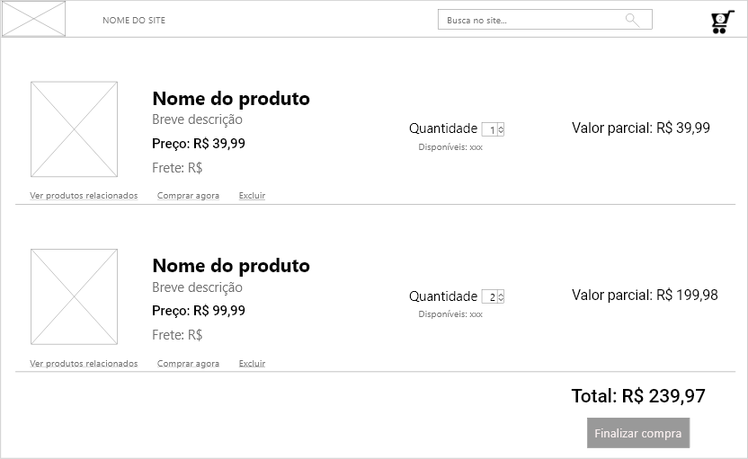

Carrinho de compras
Exemplo do padrão carrinho de compras.
Informações
A experiência de compra on-line precisa ser realizada através de uma analogia do mundo real.
- Use quando o usuário puder comprar mais de um produto.
- Use quando o usuário puder comprar mais de uma instância de um produto.
- Use quando o usuário desejar retornar mais tarde para continuar comprando.
- Use quando o usuário desejar retornar posteriormente para realizar o pagamento.
- Não use quando você tiver apenas um produto para vender.
- Não use quando o site estiver organizado de uma forma, para que não faça sentido para o usuário comprar mais de um produto por vez (por exemplo, para ASPs (Application Service Providers), permitindo que o usuário atualize seu serviço).
Um carrinho de compras é uma coleção de produtos selecionados que o usuário pode usar para gerenciar sua experiência de compra online. O usuário pode adicionar, atualizar e remover produtos do carrinho. Além disso, o usuário pode optar por alterar a quantidade de cada produto no carrinho de compras. Um custo subtotal é exibido para cada um dos itens no carrinho, mais despesas de envio, IVA etc. A qualquer momento, o usuário pode optar por continuar comprando ou prosseguir com a finalização da compra, ou seja, pagar e solicitar o que está no carrinho de compras.
Sempre que um produto é apresentado, um botão complementar "adicionar ao carrinho" deve estar visível, permitindo que o usuário adicione o respectivo produto ao carrinho. O conteúdo do carrinho pode ser visualizado a qualquer momento, em detalhes, clicando no link "mostrar carrinho".
Quando o usuário escolhe fazer o checkout, ele recebe uma lista final de itens do pedido, bem como opções de pagamento (cartão de crédito, transferência bancária ou dinheiro na entrega).
O carrinho de compras é uma metáfora bem conhecida para compras on-line. A metáfora fornece ao usuário a ideia de que colocar itens no carrinho de compras não significa necessariamente que ele está comprando esses itens, pois eles podem ser removidos antes de sair da loja. O padrão do carrinho de compras permite que o usuário colete um número de itens primeiro para pagar por todos eles posteriormente. A metáfora do checkout vai bem com o carrinho de compras, pois se assemelha ao processo em um super mercado real.